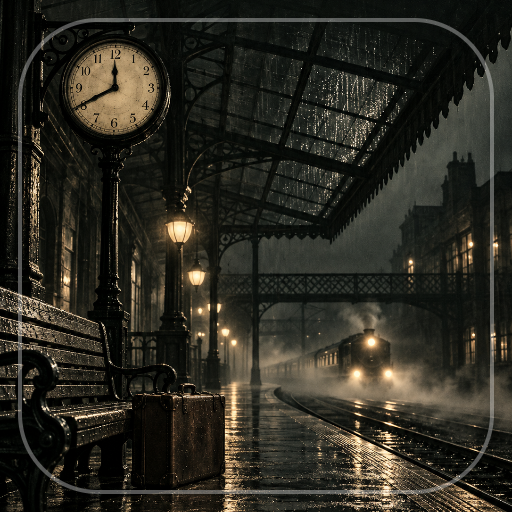

<- all projects

The Gold Train Files
PC
Volume
Live
Rebuild the evidence of the 1855 Great Gold Robbery in 25 logic puzzles from railway history.
In 1855, a gold shipment bound for Paris arrived full of lead. Open the archive, examine the documented Great Gold Robbery and work through original puzzles built around its historical record. There are 25 evidence exercises across five chapters: reconstruct routes, order timelines, check weights and separate evidence from inference. Designed reconstructions are clearly labeled, and historical notes link to the published sources. Every puzzle has a free reasoning hint plus two deeper hints, with medals for solving without help. Collect findings, replay puzzles and pick a paper for your reading desk.